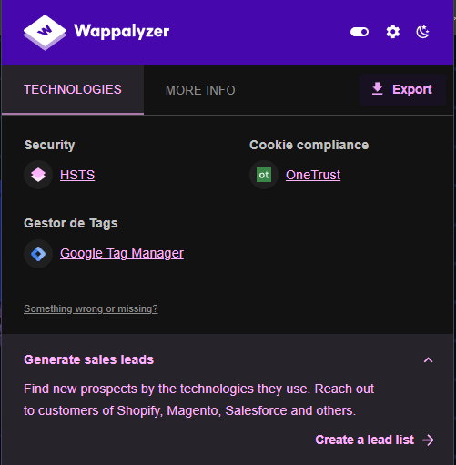
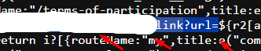
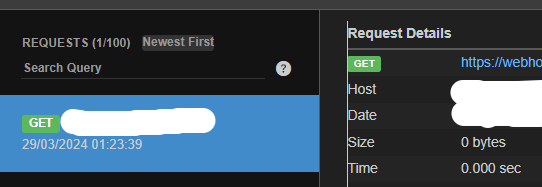
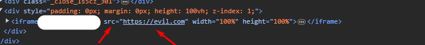
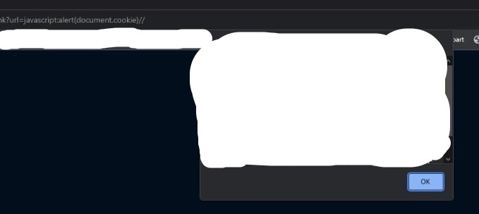

Estava cansado de caçar na HackerOne e decidi me aventurar na Intigriti, escolhi o programa da REDBULL. O programa deles é um pouco diferente dos demais programas, eles colocam o escopo em uma lista no GitHub! redbul.list. Fui até meu alvo http://alvo.com e observei o Wappalyzer, não achei nada muito interessante.
O site era apenas uma página com um GIF na tela. Então, eu abri o código fonte da página e fui observar os 'arquivos javascripts' para tentar encontrar algum endpoint interessante. Foi aí que encontrei isso aqui:

Um possível parâmetro via GET. Observando isso, corri para a URL e coloquei isso como parâmetro 'https://alvo.com/link?url=/////////evil.com' para tentar pegar um Open Redirect, mas nada aconteceu...
TENTANDO SSRF:
Já que não consegui um Open Redirect, pensei em tentar um SSRF, corri para o
'https://webhook.site/'. Esse é um site para você testar interações HTTP. Preparei a carga
'https://alvo.com/link?url=https://webhook.site/seuid' e recebi uma interação HTTP no meu webhook.

Tentei alguns payloads para SSRF, testei as seguintes cargas:
'http://169.254.169.254/latest/meta-data/iam/security-credentials'
'http://[::ⓕⓕⓕⓕ:①⑥⑨。②⑤④。⑯⑨。②⑤④]:80'
'file:///C:/Windows/win.ini'.
Eu também tentei um bypass via Redirect, subindo um arquivo .php no meu servidor local (se quiser saber mais clique aqui), mas sempre que eu colocava alguma URL, aparecia um erro na tela!... Fui olhar o DOM da página e percebi que o parametro estava caindo em um iframe.
 Então resolvi usar a seguinte carga
'https://alvo.com/link?url=javascript:alert(document.cookie)' e consegui um XSS! 
A dica que eu quero deixar aqui é: se quer evitar duplicadas, passe para o processo manual!
Esse report foi aceito e recompensado pela REDBULL!!